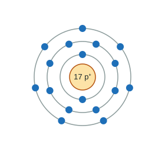
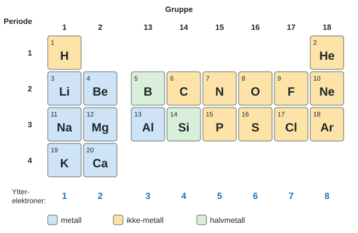

Skallmodellen
Elektronene i et atom ligger ikke hulter til bulter. De er ordnet i skall rundt kjernen. Når du kan tegne skallene, kan du forklare hvorfor noen stoffer reagerer voldsomt og andre nesten ikke reagerer i det hele tatt.
Elektronskall
Elektronene ligger i elektronskall rundt kjernen. Det innerste skallet fylles først. For de 20 første grunnstoffene, fra hydrogen til kalsium, gjelder dette:
- 1. skall: inntil 2 elektroner
- 2. skall: inntil 8 elektroner
- 3. skall: 8 elektroner før 4. skall begynner å fylles
Det 3. skallet har egentlig plass til flere enn 8 elektroner. De ekstra plassene blir brukt først hos tyngre grunnstoffer, og dem trenger du ikke her.

Elektronene i det ytterste skallet kalles ytterelektroner. De er de viktigste i kjemien, for det er de som bestemmer hvordan atomet reagerer og hvilke bindinger det lager. Karbon har 4 ytterelektroner, og natrium har 1.
Eksempel
Oppgave: Tegn skallmodellen for et kloratom (Cl). Hvor mange ytterelektroner har det?
Løsning:
- Finn atomnummeret i periodesystemet: klor har atomnummer 17. Atomnummeret er antall protoner.
- Tegn kjernen som en sirkel, og skriv 17 p+ i den.
- Atomet er nøytralt, så det har 17 elektroner.
- Fyll det innerste skallet først: tegn 2 elektroner i 1. skall. Da er 15 igjen.
- Fyll 2. skall: 8 elektroner. Da er 7 igjen.
- De 7 siste går i 3. skall.

Svar: Klor har elektronene fordelt som 2, 8, 7. Det har 7 ytterelektroner.
Skallene gir mønsteret i periodesystemet
Periodesystemet er tabellen over alle grunnstoffene. Figuren viser de 20 første. Sammenlign den med skallmodellene du har tegnet:
- For hver ny rad får atomet ett skall til. Hydrogen og helium har 1 skall, litium til neon har 2, og natrium til argon har 3.
- Grunnstoffene i samme kolonne har like mange ytterelektroner. Natrium (2, 8, 1) står rett under litium (2, 1).

Edelgassene har fullt ytterskall
Kolonnen helt til høyre er edelgassene: helium, neon og argon. Neon har elektronene fordelt som 2, 8, og argon som 2, 8, 8. Begge har 8 elektroner i ytterskallet. Helium har bare ett skall, og det er fullt med 2.
Edelgassene reagerer nesten ikke med andre stoffer. 8 ytterelektroner (2 når det bare er ett skall) er altså en svært stabil ordning. Andre atomer kan også oppnå den ved å gi fra seg, ta opp eller dele elektroner. Det kalles åtteregelen, og du lærer mer om den under ionebinding.
Derfor reagerer natrium så kraftig med vann
Natrium har bare 1 ytterelektron. Det elektronet gir natrium lett fra seg. Derfor reagerer natrium kraftig med vann. Det dannes hydrogengass og natriumhydroksid. Som en reaksjonsligning ser det slik ut (reaksjonsligninger lærer du om i emnet «Reaksjoner, støkiometri og energi»):
\[ \ce{2Na + 2H2O -> 2NaOH + H2} \]
Kalium (K, atomnummer 19) har elektronene fordelt som 2, 8, 8, 1. Det har også 1 ytterelektron og står i samme kolonne som natrium. Kalium reagerer enda kraftigere enn natrium, fordi ytterelektronet ligger lenger fra kjernen og derfor sitter løsere. Grunnstoffer med likt antall ytterelektroner oppfører seg ofte likt.
Natrium reagerer voldsomt med vann og kan ta fyr. Det oppbevares under parafinolje og skal aldri berøres med fingrene. Bruk pinsett og kniv. Forsøket med natrium i vann gjøres bare som demonstrasjon av læreren, med en liten bit, bak skjerm og med vernebriller. Hydrogengassen som dannes, er brennbar, og løsningen blir etsende (natriumhydroksid).
Test deg selv
Hvor mange ytterelektroner har atomet på figuren?
- 2
- 5
- 7
Ytterelektronene er elektronene i det ytterste skallet: 5. Atomet er nitrogen (7 protoner).
Oksygen har atomnummer 8. Hvordan er elektronene fordelt?
- 8
- 2, 6
- 2, 4, 2
Første skall har plass til 2. De 6 andre går i andre skall.
Et atom har elektronene fordelt som 2, 8, 3. Hvilket grunnstoff er det?
- natrium
- aluminium
- silisium
2 + 8 + 3 = 13 elektroner, altså 13 protoner. Atomnummer 13 er aluminium.
Litium har elektronene fordelt som 2, 1. Reagerer litium med vann?
- Ja, det har 1 ytterelektron, akkurat som natrium.
- Nei, det har for få elektroner.
- Nei, det har fullt ytterskall.
Litium gir lett fra seg sitt ene ytterelektron, men reagerer roligere enn natrium.
Hvorfor reagerer neon (2, 8) nesten ikke med andre stoffer?
- Det har for få elektroner.
- Det har 8 elektroner i ytterskallet, som er en stabil ordning.
- Det har ingen protoner.
Neon er en edelgass. 8 ytterelektroner er svært stabilt, og det er grunnlaget for åtteregelen.
Ordliste
| Begrep | Forklaring | Engelsk |
|---|---|---|
| elektronskall | Område rundt kjernen der elektronene befinner seg. Hvert skall har plass til et bestemt antall elektroner. | |
| ytterelektron | Elektron i det ytterste skallet. Antallet avgjør i stor grad hvordan atomet reagerer og binder seg til andre atomer. | |
| edelgass | Grunnstoff i gruppe 18, kolonnen helt til høyre i periodesystemet. Har 8 elektroner i ytterskallet (helium har 2) og reagerer nesten ikke. |
Les mer
- Kjemien stemmer, kapittel 1. Oppgaver: 1.5.1 og 1.5.2 a)–e).
Om kildene: Teksten, eksemplene og figurene på denne siden er laget for dette nettstedet. Siden bygger på undervisningsopplegg i kjemiprosess- og laboratoriefag ved Sauda vgs, som er utarbeidet med utgangspunkt i blant annet Kjemien stemmer, Laboranten og åpne nettkilder.